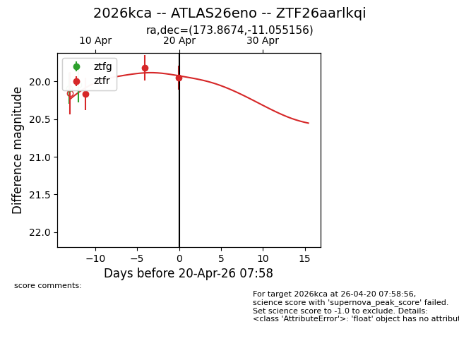
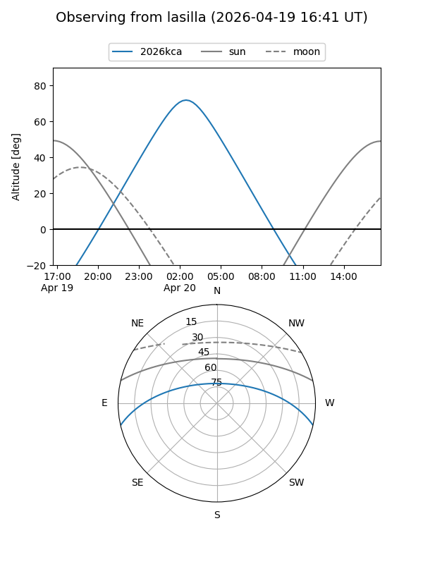
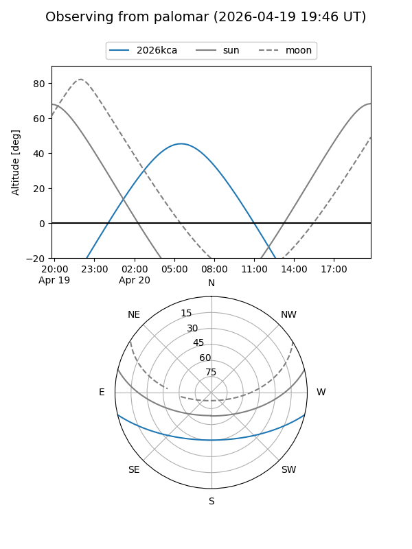
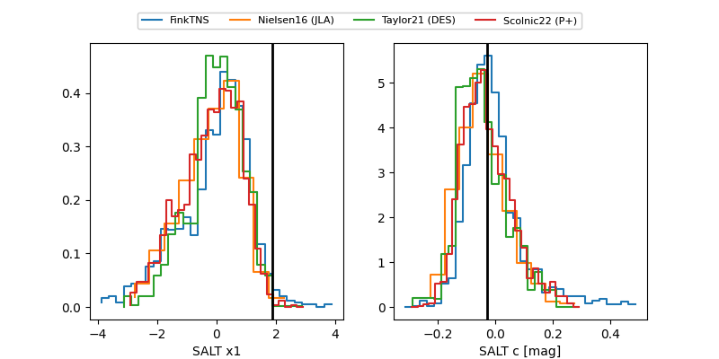

2026kca
Target 2026kca at 2026-04-20 08:10
Aliases and brokers:
FINK: link
Lasair: link
ALeRCE: link
TNS: link
YSE: link
alt names
ZTF26aarlkqi (ztf,fink_ztf)
2026kca (tns,yse)
ATLAS26eno (atlas)
Coordinates:
equatorial (ra, dec) = 173.8674,-11.05516
equatorial (HMS+DMS) = 11:35:28.17,-11:03:18.56
galactic (l, b) = (274.6574,+47.60270)
Flags:
Photometry:
last ztfr=19.95
3 ztfr detections
Lightcurve

Visibility


Additional plots
